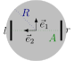
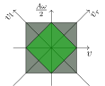
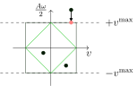
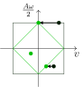
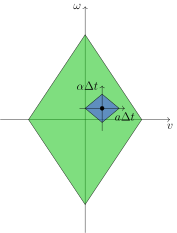
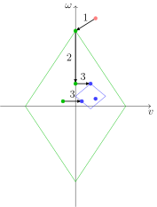

Two-wheeled kinematics#
In navground, kinematics are responsible to compute feasible commands (i.e., twists) from arbitrary commands. The most basic kinematics, called “Omni”, simply limits the norm of velocity to maximal_speed and the absolute value of angular speed to maximal_angular_speed. In this section, we focus on the kinematics of a robot with two differential drive wheels as depicted below.

Top view of a two-wheeled differential drive robot
The robot has radius \(R\) with two wheels (left \(l\) and right \(r\)), positioned on a common axis, distanced by \(A\). We introduce a robot-fixed, positively oriented, orthonormal reference frame \(\{\vec e_1, \vec e_2\}\), positioned at the center of the wheel axis.
Kinematics#
Kinematics primary deals with velocities and in particular with the mapping between body velocity and actuators velocities. In our case, the robot moves forwards at linear speed \(v\) with respect to its reference frame \(\{\vec e_1, \vec e_2\}\), which in turn rotates at angular speed \(\omega\)
To convert between wheel speeds \(v_{l, r}\) and body velocity \((v, \omega)\), we can use
If wheel speed is limited by \(v^\max\), not all body velocities are feasible anymore; for example, it is not possible to move and rotate at maximal speed at the same time. In the diagram below, we represent in dark green the interval of body velocities \([-v^\max, v^\max] \times [-\omega^\max, \omega^\max]\) with
and in bright green the feasible set of velocities that corresponds to wheel velocities in \([-v^\max, v^\max]\).

Feasible velocity set
There are different ways to match a twist that lies outside of the feasible set to a twist inside the feasible test. The navground “2WDiff” kinematics uses the following strategy that privileges angular over linear speed:
first, angular speed is clipped
\[\omega \leftarrow \omega \left|_{[-\omega^\max, -\omega^\max]} \right.\]
Clipping angular speed
then, linear speed is clipped so that the twist is contained in the feasible set:
\[v \leftarrow v \left|_{[-v^\max - |\omega \frac{A}{2}|, v^\max + |\omega \frac{A}{2}|]} \right.\]
Clipping linear speed
This is the same as first clipping the largest wheel speed and then setting the other wheel speed so that their difference is maintained.
Example#
>>> from navground import core
>>> kinematics = core.kinematics.TwoWheelsDifferentialDriveKinematics(max_speed=1, axis=1)
>>> kinematics.max_angular_speed
2.0
>>> cmd = kinematics.feasible(core.Twist2((2, 0), 1.5, frame=Frame.relative))
>>> cmd
Twist2((0.250000, 0.000000), 1.500000, frame=Frame.relative)
# the corresponding (left, right) wheel speeds
>>> kinematics.wheel_speeds(cmd)
[-0.5, 1.0]
Acceleration#
Moving to second order, we can compute the acceleration:
We can ignore the transversal component \(\vec e_2\) as it is sonely due to the lateral friction between wheel and floor that avoids that the robot slips. Therefore, we focus on linear and angular accelerations:
If we want to limit accelerations, we can add a “LimitAcceleration” modulation to the behavior that is computing the commands. This will simply compute the acceleration required to actuate the command over a given time step \(\Delta t\), clip it and return the command obtained by applying the (clipped) acceleration on the current velocity \((v_0, \omega_0)\):
The same functionality is exposed by navground.core.Twist2.interpolate().
Example#
>>> from navground import core
>>> kinematics = core.kinematics.TwoWheelsDifferentialDriveKinematics( max_speed=1, axis=1)
>>> cmd = kinematics.feasible(core.Twist2((2, 0), 1.5))
>>> current = core.Twist2((0, 0), 0, frame=core.Frame.relative)
>>> current.interpolate(cmd, time_step=0.1, max_acceleration=1.0, max_angular_acceleration=1.0)
Twist2((0.100000, 0.000000), 0.100000, frame=Frame.relative)
Dynamics#
Let’s say we want to simulate a robot having motors. The simplest assumption we can make is that the motor torque is limited, which in turn would limit acceleration. To understand this relationship, we compute the dynamics of the system. Let us assume that the robot has mass \(m\), vertical-component of moment of inertia \(I\) and that the two motors apply forces \(F_{r,l}\) to the robot body without slipping.
Top view of a two-wheeled differential drive robot with motors
These forces will cause the robot to accelerate as
The reverse is given by
To simplify the expressions, we introduce the unit-less (scaled) moment of inertia as the ratio between \(I\) and the moment of inertial of an homogeneous disc of diameter \(A\), and \(f\) as the ratio between wheel force and mass:
then
The mapping between wheel accelerations and forces shows that one wheel motor impacts also the other wheel when \(i \neq 2\):
Maximal body acceleration is obtained when both forces are maximal in the same direction, while maximal body angular acceleration when they act in opposite directions:
We can fully specify the dynamics with \(a^\max\) and \(i\) (or \(\alpha^\max\)) instead of mass and maximal motor torque.
The moment of inertia can be computed from the wheel accelerations when the robot accelerates at maximum moving straight (\(a^\max_{\mathit{fwd}} = a^\max\)) and rotating in place (\(a^\max_{\mathit{rot}} = \alpha^\max \frac{A}{2}\)):
The relationship between wheel forces and body acceleration is similar to the relationship between wheel speeds and body velocity and adds a constrain on feasible accelerations represented in the diagram below:
Feasible acceleration set
As before, given an arbitrary velocity \((v, \omega)\) there may be different ways to compute a feasible velocity from the current velocity \((v_0, \omega_0)\) (the dot below) over one time step \(\Delta t\), respecting both constraints: maximal torque (blue) and maximal velocity (green).

Respecting dynamics, the feasible velocity set is the intersection of green and blue sets.
Similarly to “2WDiff”, the navground kinematics “2WDiffDyn” privileges angular speed:
First, a feasible velocity is computed ignoring dynamics, i.e., clipping it inside the green set using the same strategy as “2WDiff”.
Then, the angular speed is clipped to respect maximal angular acceleration
\[\begin{split}\Delta \omega^\max & \leftarrow \alpha^\max \Delta t \\ \omega & \leftarrow \omega \left|_{[\omega_0 -\Delta \omega^\max, \omega_0 + \Delta \omega^\max]} \right.\end{split}\]Finally, the linear speed is clipped, so that the twist is contained in the blue set:
\[\begin{split}\Delta v^\max & \leftarrow a^\max \Delta t - |\omega - \omega_0| \frac{A i}{4} \\ v & \leftarrow v \left|_{[v_0 -\Delta v^\max, v_0 + \Delta v^\max]} \right.\end{split}\]
These three steps are illustrated below:

Computing a feasible twist respecting maximal torque.
Alternatively, we could compute and clip the motor torques independently.
Example#
>>> from navground import core
>>> kinematics = core.kinematics.DynamicTwoWheelsDifferentialDriveKinematics(
max_speed=1, axis=1, max_acceleration=1, moi=1)0
>>> kinematics.max_angular_acceleration
4.0
>>> kinematics.feasible(core.Twist2((2, 0), 1.5), current=core.Twist2((0, 0), 0), time_step=0.1)
Twist2((0.050000, 0.000000), 0.200000, frame=Frame.relative)
Motor controller#
If we want to apply a more complex motor controller compared to clipping torque to the feasible range, we can either create a new kinematics (possibly sub-classing “2WDiffDyn”) or, preferably as kinematics should focus on constrains, introduce a new behavior modulation. Here we show an example of the latter, for a proportional torque controller that updates like:
Note
A similar PID controller is offered by navground.core.behavior_modulations.MotorPIDModulation.
Example#
from navground import core
import numpy as np
class MotorController(core.BehaviorModulation, name="MotorController"):
def __init__(self, k: float = 0.1):
super().__init__()
self._k = k
self.torques: np.ndarray = np.zeros(2)
def post(self, behavior: core.Behavior, time_step: float,
cmd: core.Twist2) -> core.Twist2:
# We assume that the kinematics supports dynamics
# Let's compute a feasible control
current = behavior.get_twist(core.Frame.relative)
cmd = behavior.kinematics.feasible(cmd, current, time_step)
# and torques, which are also feasible
target_torques = behavior.kinematics.wheel_torques(
cmd, current, time_step)
# We then apply a simple P-controller to the torques
e = target_torques - self.torques
max_torque = behavior.kinematics.max_wheel_torque
self.torques = np.clip(self.torques + self.k * e, -max_torque, max_torque)
# and return the twist obtained by applying these torques.
return behavior.kinematics.twist_from_wheel_torques(
self.torques, current, time_step)
@property
@core.register(0.2, "P factor")
def k(self) -> float:
return self._k
@k.setter
def k(self, value: float) -> None:
self._k = value
Experiment#
Let us do a short experiment that tests the four alternatives. We simulate one run of the same scenario as in A tour of navground, with a single static obstacle to pass before reaching the target.
steps: 140
time_step: 0.1
record_pose: true
record_time: true
record_actuated_cmd: true
terminate_when_all_idle_or_stuck: false
scenario:
obstacles:
- radius: 1
position: [5, 0.1]
groups:
-
number: 1
radius: 1
control_period: 0.1
speed_tolerance: 0.02
kinematics:
type: 2WDiff
wheel_axis: 1
max_speed: 1
behavior:
type: ORCA
state_estimation:
type: Bounded
range: 10.0
task:
type: Waypoints
waypoints: [[10, 0]]
loop: false
tolerance: 1
steps: 140
time_step: 0.1
record_pose: true
record_time: true
record_actuated_cmd: true
terminate_when_all_idle_or_stuck: false
scenario:
obstacles:
- radius: 1
position: [5, 0.1]
groups:
-
number: 1
radius: 1
control_period: 0.1
speed_tolerance: 0.02
kinematics:
type: 2WDiff
wheel_axis: 1
max_speed: 1
behavior:
type: ORCA
modulations:
- type: LimitAcceleration
max_acceleration: 1
max_angular_acceleration: 4
state_estimation:
type: Bounded
range: 10.0
task:
type: Waypoints
waypoints: [[10, 0]]
loop: false
tolerance: 1
steps: 140
time_step: 0.1
record_pose: true
record_time: true
record_actuated_cmd: true
terminate_when_all_idle_or_stuck: false
scenario:
obstacles:
- radius: 1
position: [5, 0.1]
groups:
-
number: 1
radius: 1
control_period: 0.1
speed_tolerance: 0.02
kinematics:
type: 2WDiffDyn
wheel_axis: 1
max_speed: 1
max_acceleration: 1
moi: 1
behavior:
type: ORCA
state_estimation:
type: Bounded
range: 10
task:
type: Waypoints
waypoints: [[10, 0]]
loop: false
tolerance: 1
steps: 140
time_step: 0.1
record_pose: true
record_time: true
record_actuated_cmd: true
terminate_when_all_idle_or_stuck: false
scenario:
obstacles:
- radius: 1
position: [5, 0.1]
groups:
-
number: 1
radius: 1
control_period: 0.1
speed_tolerance: 0.02
kinematics:
type: 2WDiffDyn
wheel_axis: 1
max_speed: 1
max_acceleration: 1
moi: 1
behavior:
type: ORCA
modulations:
- type: MotorController
k: 0.2
state_estimation:
type: Bounded
range: 10
task:
type: Waypoints
waypoints: [[10, 0]]
loop: false
tolerance: 1
Let’s compare the trajectories,
the wheel speeds,
the linear accelerations,
the angular accelerations,
and the forces required by the motors (dashed = left motor).
Because the acceleration limits are large enough, the trajectories are similar. All controllers respect the wheel speed limits. We observe how the forces required by the robot wheels in case of no acceleration limits are much larger and exceed the feasible band ([-1, 1]) defined by the “2WDiffDyn” kinematics.